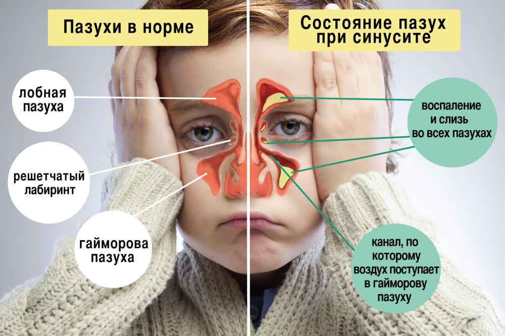
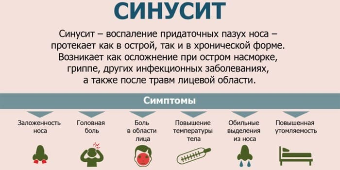
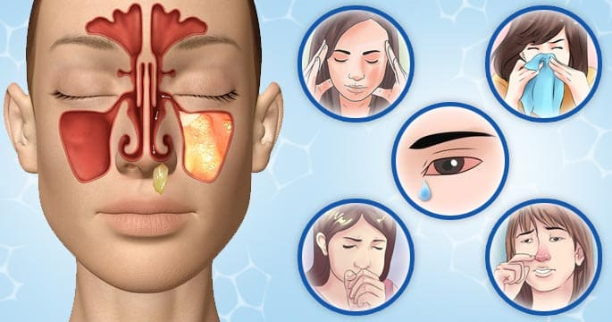
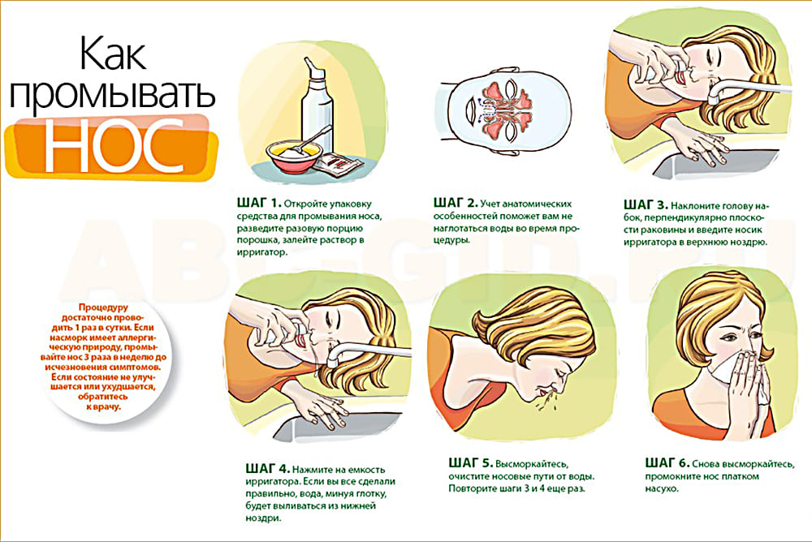

Когда зараженный микроорганизмами воздух проходит по дыхательным путям, воспаление может возникнуть и в других местах. Мы только что завершили свое путешествие к среднему уху.

Слышит ли ваш ребенок? Как определить это
Вот некоторые простые наблюдения, которые можно производить в разном возрасте, чтобы проверить слух своего ребенка.
Если на многие вопросы вы ответите «нет», пусть слух вашего ребенка проверит врач.
Следом идут пазухи носа, небольшие полости в костях лицевого черепа по сторонам носа, под глазами и над бровями. При простуде, как и в носу, слизистая оболочка в этих пазухах воспаляется, поскольку выделяет слизь. Эта слизь скапливается в пазухах и стекает к носу, после чего она еще сильнее течет из носа, или поступает назад, в глотку, вызывая носоглоточное капание, щекотку в глотке и возникающий в результате кашель при лежании на спине. Вместо того чтобы вытекать из пазух и со временем исчезнуть, как обычно бывает при простуде, иногда эта жидкость задерживается в пазухах, где она застаивается и инфицируется. В отличие от оталгии (ушной боли), насморка или боли в горле, синуситы имеют слабо выраженные симптомы и часто остаются невыявленными, поскольку ребенок чувствует себя не слишком плохо.
Следует помнить, что синуситы не возникают ниоткуда. Бактериям необходимо 7–10 дней, чтобы развить процесс инфицирования. Поэтому, заметив у ребенка какой-либо из описанных ниже симптомов, не стоит стремглав бежать к врачу. Лучше подождать и посмотреть, как будет развиваться процесс.

Поскольку пазухи расположены внутри костей, врач не может визуально определить инфекцию, как он может сделать это в случае инфекции уха или горла. В большой степени врач будет полагаться на ваше описание симптоматики, а также на визуальный осмотр носа, ушей, глаз и лица.
Стоит подозревать синуситы, если имеет место следующее:
• не проходит насморк (более недели или двух) или же острое респираторное заболевание возвращается сразу по окончании курса лечения антибиотиками;
• под глазами появляются темные круги и вспухают нижние веки;
• лицо становится бледным и изможденным;
• появляются густые желтые выделения из носа и глаз;
• навязчивый кашель, обычно усиливающийся по ночам;
• неприятный запах изо рта, исходящий от инфицированной слизи в задней части глотки;
• усталость и небольшое повышение температуры.

В последнее время в лечении синуситов все меньше применяется консервативное лечение антибиотиками. Исследования подтвердили, что на ранней стадии синуситы прекрасно лечатся без антибиотиков, к примеру, промыванием носа и паровыми ингаляциями.
Синуситы лечат как отит, но дольше. Нередко ребенку требуется двух-трехнедельное лечение антибиотиками для полного избавления от синусита. В дополнение к антибиотикам важно прочищать ребенку нос, чтобы помочь выделениям вытечь из пазух носа.

Синуситы чаще встречаются у детей дошкольного и школьного возраста, а также у подростков, но простуда щедро делится микробами даже с крошечными носовыми пазухами младенцев.
Марта, Уильям, Роберт, Джеймс Сирс"Ваш малыш от рождения до двух лет"